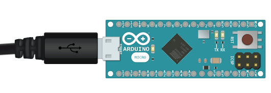

A simple interface for serial communication.v1.0.0-alpha.1
How to Install See Example Public MethodsThe Arduino Serial object provides a great general purpose interface for sending and receiving serial commands. This library takes care of the details and allows you to quickly define and consume an event-based serial protocol.
This library is functional but likely to change. It was released early in order to gain feedback from the community and evolve in the right direction. Please post feedback, questions, and issues to this GitHub issues page.
This library is part of a larger package that you can install to access all of the documented sensors, or you can use this library by itself.
This library communicates over the Arduino USB port set at 115200 baud:

 Event
EventCreate a new Serial Manager instance.
Begin serial communication over the Arduino USB cable at 115200 baud. This method must be called in setup() in order to use this library.
Provide a char to change the identifier that denotes the end of each serial command. This library defaults to having a terminating flag of ; semicolon.
Provide a char to change the identifier between parameters in serial commands. This library defaults to having a delimiter of , comma.
EventReturns true when a setFlag() has been identified in the serial communication input stream and the parsed data is available from getValue().
In order for this library to behave correctly; you must wrap all real-time methods in a conditional with this method (as shown below).
Returns a String of data parsed in chunks between setFlag() from the serial communication input stream. This method must be used in conjunction with onReceive() for this library to behave correctly (as shown below).
Returns a String of data that is the first (or only) parameter parsed from getValue(). This enables a serial command structure that follows a cmd; or cmd,param; template. This method must be used in conjunction with onReceive() for this library to behave correctly (as shown below).
Returns a String of data that is the second parameter parsed from getValue(). This enables a serial command structure that follows a cmd; or cmd,param; template. This method must be used in conjunction with onReceive() for this library to behave correctly (as shown below).
Provide a String to see if it matches the current getCmd(). This method must be used in conjunction with onReceive() for this library to behave correctly (as shown below).
Provide a String to see if it matches the current getParam(). This method must be used in conjunction with onReceive() for this library to behave correctly (as shown below).